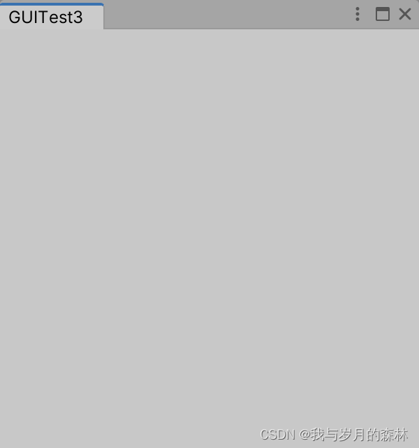
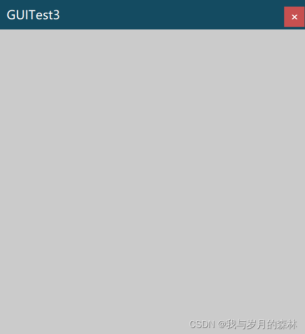
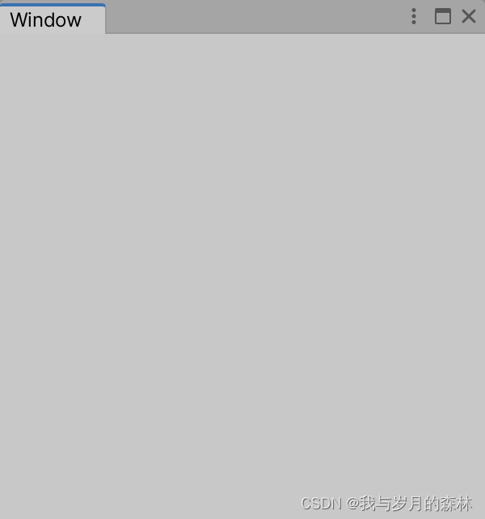
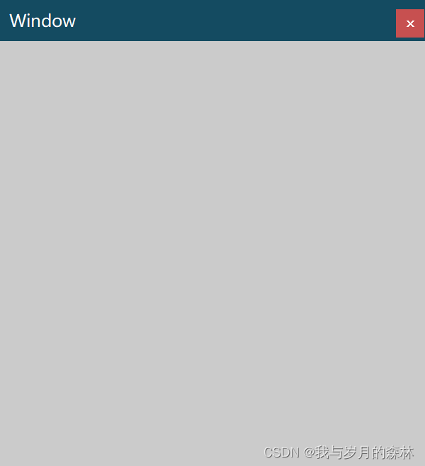
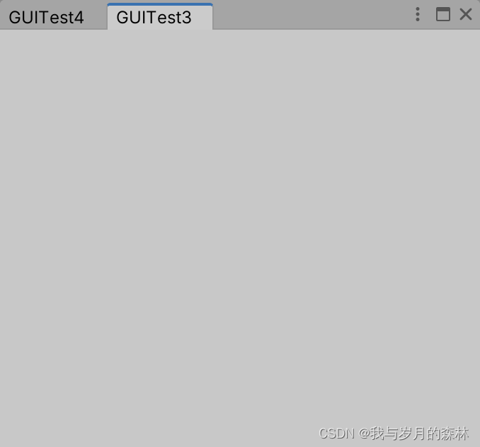
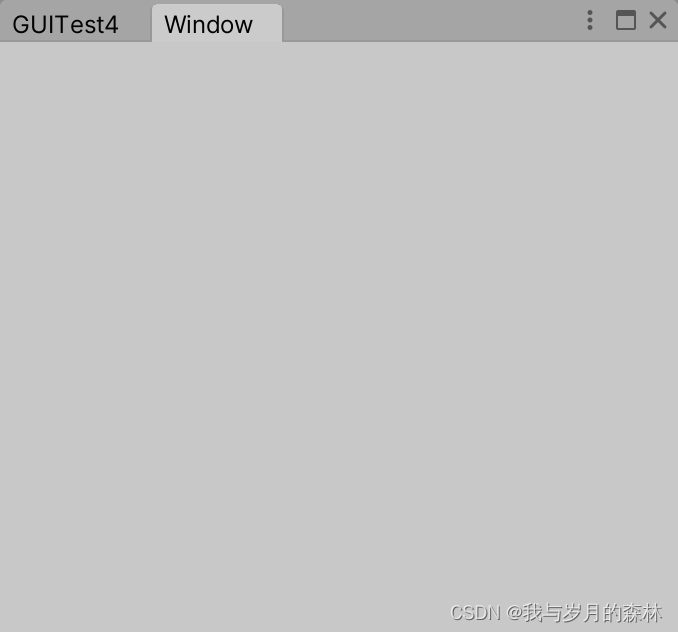
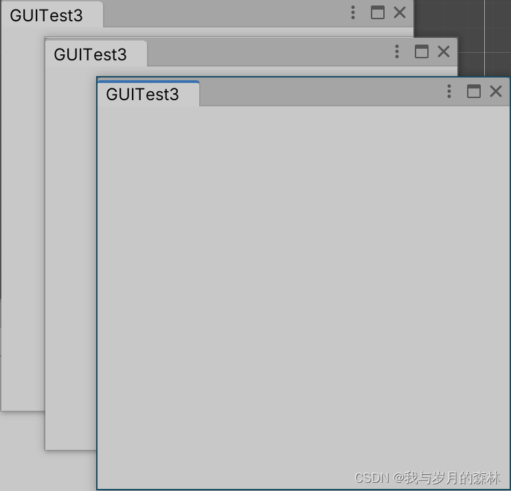
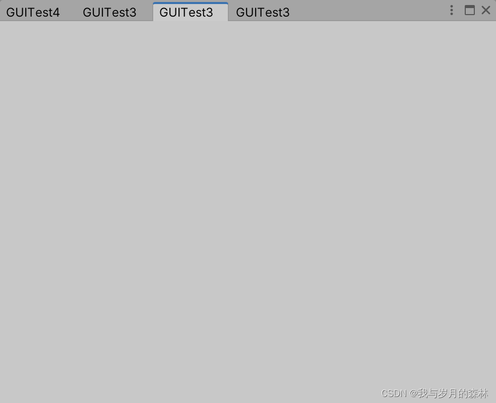
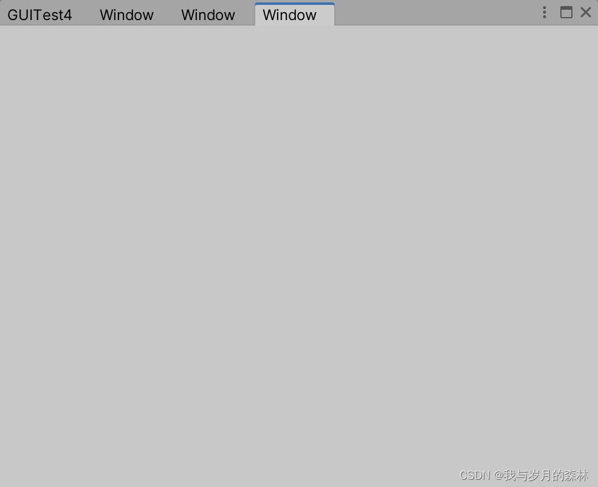

Unity中EditorWindow的创建和停靠
API简介
创建EditorWindow主要使用的方法有两个：GetWindow和CreateWindow
GetWindow和CreateWindow的区别
- GetWindow试图寻找指定类型的第一个窗口，如果无法找到则进行创建，CreateWindow直接创建一个指定类型的窗口
- GetWindow的参数有title，focus，utility，desiredDockNextTo，CreateWindow的参数有title，desiredDockNextTo
参数简介
- title：窗口标题，默认为[命名空间].类名
- focus：是否聚焦，默认为true
- utility：是否为浮动窗口，默认为false
- desiredDockNextTo：将要停靠的窗口的Type数组，默认为null
代码和截图展示
为了方便展示所有情况我们定义了GUITest3和GUITest4两个类，二者均为继承自EditorWindow的派生类，每行代码的序号对应下面图的序号，请自行对比。
1 | |

1.1.1

1.1.2

1.1.3 && 1.1.4

1.1.5 && 1.1.6

1.1.7

1.1.8 && 1.1.9

1.2.1

1.2.2

1.2.3
注意事项
（设置当前窗口为W1，被停靠的窗口为W2）
如果想要通过focusedWindow来确定W2，那就需要在W2中编写GUI来创建W1，例如在W2中有一个Button，点击它创建W1，因为经过我的测试和验证，如果仅仅通过MenuItem来创建W1和W2，会出现focusedWindow优先聚焦Unity自带窗口的问题，例如Hierarchy、Console、Project等等；
请勿将创建窗口的代码放置在任何可能多次执行的方法中，否则会导致你的Unity或电脑崩溃
停靠需要满足以下三个条件：
需要保证W2（这里就是GUITest4类型窗口）存在
需要保证W2的utility参数为false，因为浮动窗口不允许被停靠
W1不能对它的position属性进行设置，否则停靠会失效
本博客所有文章除特别声明外，均采用 CC BY-NC-SA 4.0 许可协议。转载请注明来源 我与岁月的森林的博客！
评论